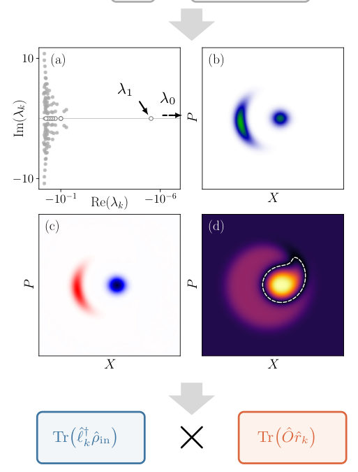

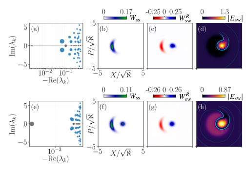
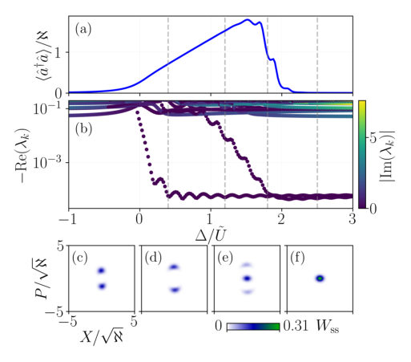
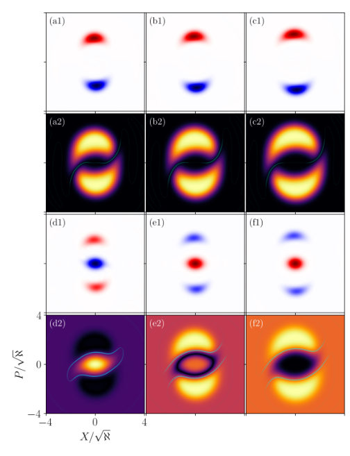
Authors: Martin Kjøllesdal Johnsrud, Giulia Pisegna, Ramin Golestanian
Type: theory · Category: statistical mechanics · PDF: https://arxiv.org/pdf/2608.05027v1
Analysis basis: full PDF text, analyzed in chunks
Topic relevance: 🔥 non-equilibrium universality 5/5 · 🔥 driven-dissipative phase transition 4/5 · Keldysh / 2PI / non-Gaussian methods 3/5 · methods for driven-dissipative 3/5 · non-equilibrium dynamics 3/5 · Frenkel-Kontorova 1/5 · analog quantum simulation 1/5 · correlated / nonlocal dissipation 1/5
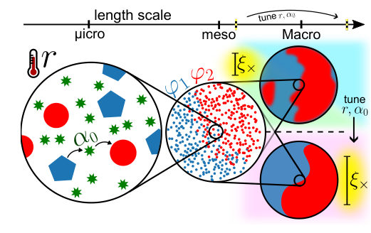
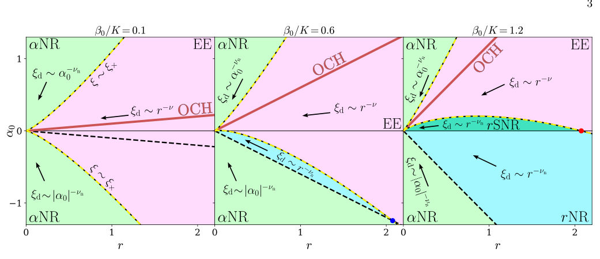
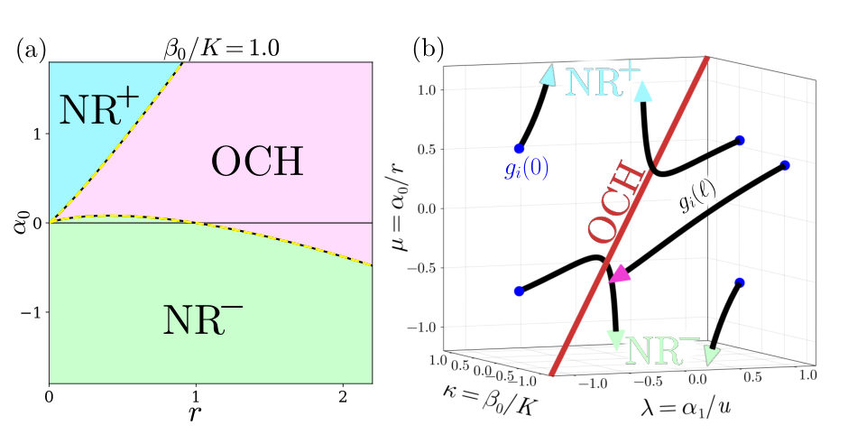
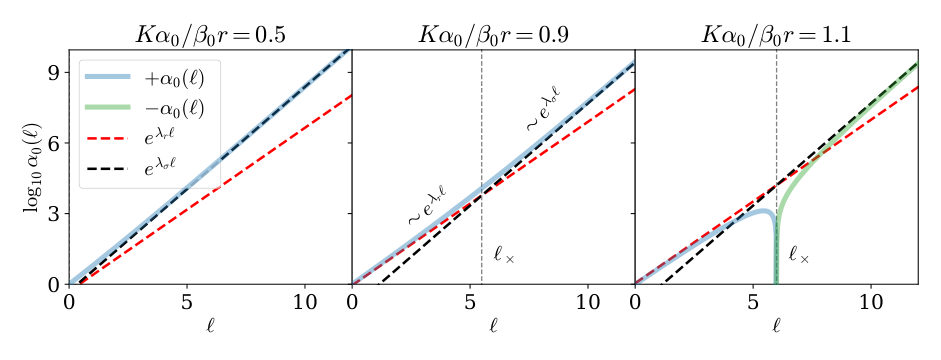
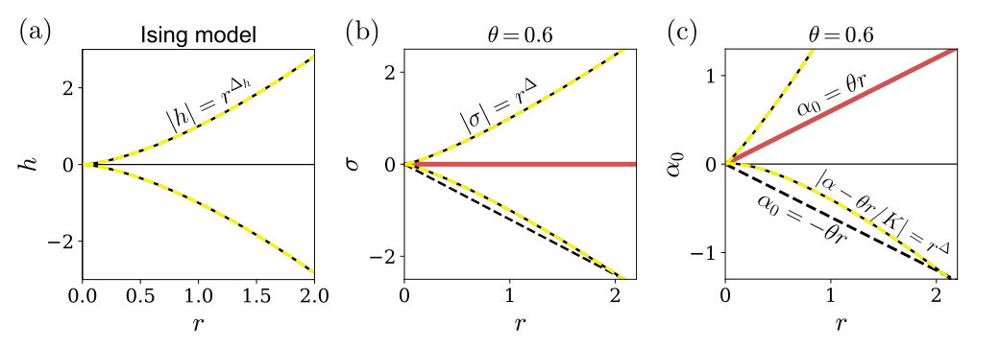
Summary. This paper theoretically analyzes the critical behavior of active matter systems modeled by the Non-Reciprocal Cahn-Hilliard equation, which incorporates non-equilibrium activity. Using renormalization group techniques, the authors show that while structural correlations follow equilibrium predictions, the dynamic correlation length diverges according to novel scaling laws dictated by the system's inherent non-reciprocity. This work provides a framework for understanding how metabolic or active processes can fundamentally alter critical phenomena.
Why it may be interesting. The concepts of non-equilibrium critical points and broken time-reversal symmetry are highly relevant to open quantum systems where dissipation or external driving breaks detailed balance. The RG approach used for active matter dynamics provides a theoretical framework applicable to driven many-body physics.
Main problem. The study investigates the scaling behavior of non-reciprocal and odd conserved dynamics near a critical point in active matter systems.
Main result. Structural correlations are governed by standard equilibrium exponents, while dynamical correlations exhibit novel scaling regimes characterized by new critical exponents due to broken time-reversal symmetry.
Method. The research employs perturbative dynamical renormalization group (RG) techniques and response-field formalism to analyze correlation functions and self-energies.
Model / system. The primary model is the Non-Reciprocal Cahn-Hilliard (NRCH) model, describing a binary mixture with non-reciprocal interactions. A related critical point is identified as the Odd Cahn-Hilliard (OCH) model.
Key observables. Structural correlation length ($\xi_s$), dynamical correlation length ($\xi_d$), and vorticity ($\Omega_{ss}$), which probes time-reversal symmetry breaking.
Important parameters / regimes. Reduced temperature ($r$) and the non-reciprocal coupling strength ($\alpha_0$). The system exhibits distinct regimes: Effective Equilibrium (EE) and manifestly Non-Reciprocal (NR).
Assumptions / limitations. The analysis relies on RG calculations, assuming specific potential conditions for simplified functional gradient dynamics.
Figures summary. Figure 1 illustrates the hierarchical control of transitions between non-reciprocal and effective-equilibrium regimes. Figure 2 maps out the crossover lines in parameter space showing how $\xi_d$ behaves relative to tuning parameters ($r$ and $\alpha_0$).
Paper structure. The paper develops from establishing the physical context (active matter, non-reciprocity) using the NRCH model, applying RG techniques to calculate scaling exponents ($ u$ vs. $ u_n$), and finally detailing complex calculations of correlation functions ($J(0,1)$, $J(1,0)$) via dimensional regularization.
In recent years, non-reciprocity has been explored as a ubiquitous manifestation of non-equilibrium activity at the microscopic scales for various active matter systems, from mixtures of chemically active enzymes, colloids, and droplets, to engineered light-controlled active colloids and robotic meta-materials. A commonly used minimal model to describe the dynamics of a binary mixture of conserved species with non-reciprocal interactions is the non-reciprocal Cahn-Hilliard (NRCH) model. The model is characterized by a temperature-like tuning parameter, which can trigger phase separation, and a non-reciprocal coupling, which can lead to the formation of spatio-temporal patterns, as it represents an intrinsic source of non-equilibrium activity and breaks parity and time-reversal symmetries. Here, we study the scaling behavior of the NRCH model near the critical point using perturbative dynamical renormalization group techniques. We find that structural and dynamical correlations are controlled by different correlation lengths, both of which diverge at the critical point, but governed by different scaling laws. In particular, while the structural correlations are always controlled by temperature and the classical Wilson-Fisher critical exponent, the dynamical correlation length exhibits multiple scaling regimes in which either temperature or non-reciprocal coupling can dominate as the key tuning parameter, with a new critical exponent characterizing the divergence. The critical point corresponds to a conserved equilibrium-like dynamics with odd mobility, which we denote as the odd Cahn-Hilliard (OCH) model. Our findings may have important implications on how living systems can control phase separation and spatio-temporal pattern formation using the rates of catalytic reactions, and in general metabolism, as control parameters.
Authors: Junchao Wang, Zeyuan Wang, Lei Li, Feng Wang, Shibo Liang, Keduo Yan
Type: both · Category: quantum information and computing · PDF: https://arxiv.org/pdf/2608.05010v1
Analysis basis: full PDF text, analyzed in chunks
Topic relevance: 🔥 QC/QI experiment 5/5 · 🔥 Rydberg arrays 4/5 · analog quantum simulation 3/5 · entanglement & information structure 2/5 · non-equilibrium dynamics 1/5 · quantum optics experiment 1/5
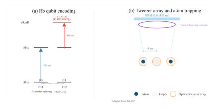
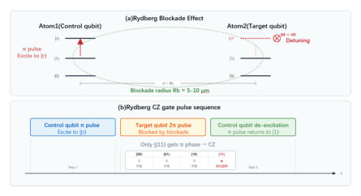
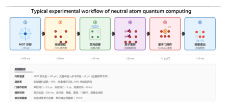
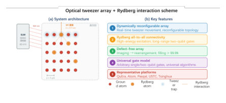
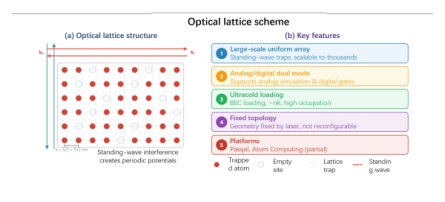
Summary. This paper reviews neutral atom quantum computing, which uses laser-trapped atoms and Rydberg interactions to perform quantum gates. It systematically surveys the technical progress from basic principles to thousand-qubit systems, highlighting key achievements like high fidelity and advanced error correction demonstrations. The review concludes by analyzing critical bottlenecks needed for realizing fault-tolerant quantum computation.
Why it may be interesting. It provides a comprehensive roadmap for quantum information scientists by detailing the hardware realization path—from atomic physics principles to fault-tolerant computation architectures. The detailed discussion on error correction integration is highly relevant.
Main problem. The central challenge is developing scalable, high-fidelity quantum computing hardware using neutral atoms.
Main result. Significant progress has been shown across the field, reaching thousand-qubit arrays and demonstrating advanced error correction protocols. The mainstream route involves optical tweezer arrays combined with Rydberg interactions.
Method. The paper provides a systematic review covering theoretical principles, experimental techniques, and future scaling challenges in neutral atom quantum computing.
Model / system. The platform uses laser-trapped neutral atoms (e.g., Rb, Sr) as qubits, leveraging internal energy levels and strong dipole-dipole interactions mediated by highly excited Rydberg states to implement gates.
Key observables. Two-qubit gate fidelity ($>99.5\%$), number of trapped qubits ($\sim 10^3$ to $10^4$), error correction thresholds, and coherence times (seconds to minutes).
Important parameters / regimes. Rydberg blockade radius ($R_b$), interaction strength ($\propto 1/R^6$ or $1/R^3$), and the scalability-fidelity trade-off.
Assumptions / limitations. The primary bottlenecks analyzed include atom loss, laser system industrialization, control electronics bandwidth, and achieving fault tolerance beyond current memory demonstrations.
Figures summary. Figures illustrate qubit encoding schemes using atomic energy levels (e.g., Rb hyperfine states) and the schematic workflow involving optical tweezer arrays for gate operations via Rydberg blockade.
Paper structure. The review systematically covers working principles (qubit encoding, trapping methods like tweezers/lattices), core mechanisms (Rydberg interactions, blockade gates), surveyed technical routes, historical progress milestones, and in-depth analysis of current bottlenecks and future directions.
Neutral atom quantum computing utilizes laser-trapped neutral atoms as qubits and realizes quantum logic gate operations through Rydberg-state interactions. In recent years, it has become one of the most vibrant directions in quantum computing hardware. This paper systematically reviews the working principles of neutral-atom quantum computers, including qubit encoding, atom trapping and manipulation, Rydberg states and interactions, the Rydberg blockade quantum gate mechanism, and atom rearrangement with reconfigurable architectures. The mainstream technical routes are surveyed, represented by optical tweezer arrays combined with Rydberg interactions, optical lattice schemes, and dipole trap arrays. A panoramic review is provided of domestic and international research progress from theoretical foundations in 2000 to the latest achievements in 2026, including thousand-qubit-scale systems, logical qubits, and quantum error correction experiments. Key breakthroughs are highlighted, such as the 6100-atom qubit array, continuous operation of a 3000-qubit system, quantum simulation of the Kitaev honeycomb model, toric code error correction demonstrations, encoding rates exceeding 1/2, and fault-tolerant architectures. The core bottlenecks are analyzed in depth, including the scalability--fidelity trade-off, engineering implementation of quantum error correction, atom loss and mid-circuit replenishment, laser system industrialization, control electronics scalability, and long-distance quantum interconnection. This paper aims to provide a systematic reference for academic research and technological development in this field.
Authors: Tong Wang, Peng-Fei Wei, Hai-Jun Xing, Zhihai Wang
Type: theory · Category: other · PDF: https://arxiv.org/pdf/2608.04578v1
Analysis basis: full PDF text, analyzed in chunks
Topic relevance: 🔥 measurement-induced transitions 4/5 · 🔥 quantum optics experiment 4/5 · analog quantum simulation 3/5 · methods for driven-dissipative 3/5 · quantum measurements 3/5 · QC/QI experiment 2/5 · Tavis-Cummings & cavity-many-emitter 2/5 · correlated cavity matter 2/5 · driven-dissipative phase transition 2/5 · Keldysh / 2PI / non-Gaussian methods 1/5 · correlated / nonlocal dissipation 1/5 · entanglement & information structure 1/5 · interference shaping light 1/5 · non-equilibrium dynamics 1/5 · non-equilibrium universality 1/5
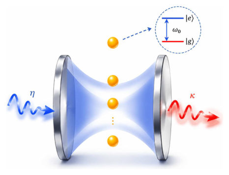
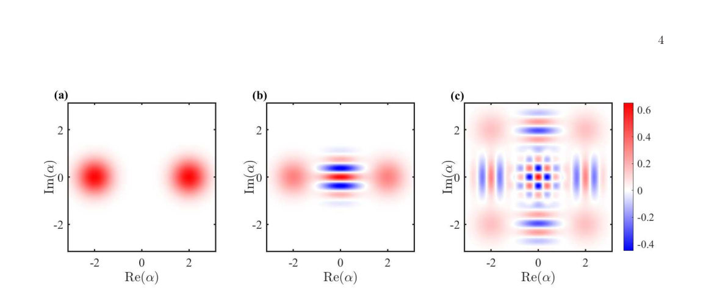
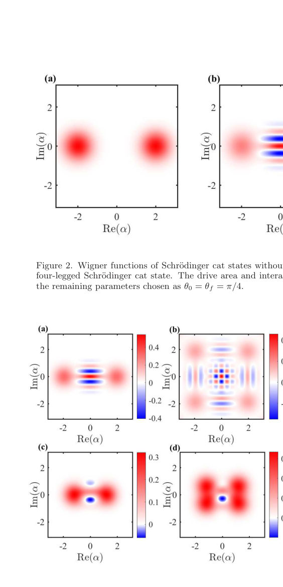
Summary. The paper presents a novel, measurement-based protocol for creating Schrödinger cat states in a cavity QED setup. By combining coherent driving with dispersive atom-cavity coupling followed by atomic postselection, the authors generate highly nonclassical field states. This method is advantageous because it avoids the need for strong nonlinear interactions or engineered dissipation while maintaining robustness against moderate photon loss.
Why it may be interesting. This work provides an experimentally accessible route to generating complex nonclassical states using standard cavity QED components (driving and measurement) rather than relying on difficult-to-implement strong nonlinearities or engineered loss mechanisms.
Main problem. The primary goal is generating Schrödinger cat states, which are crucial nonclassical resources for continuous-variable quantum information processing.
Main result. A measurement-based protocol was proposed that successfully generates robust, multi-component Schrödinger cat states in a cavity QED system without needing strong nonlinearities or engineered dissipation.
Method. The method combines coherent driving, dispersive atom-cavity interaction, and subsequent atomic postselection to project the field into a non-Gaussian superposition state.
Model / system. The physical platform is a Cavity Quantum Electrodynamics (QED) system involving a single-mode cavity coupled to flying two-level atoms. The dynamics are modeled using the Lindblad master equation, incorporating driving and dispersive coupling terms.
Key observables. Wigner function $W(\alpha)$ in phase space, used to diagnose nonclassicality via negative values and interference fringes.
Important parameters / regimes. The protocol depends on cavity decay rate ($\kappa$), the coherent driving strength ($\eta$), and the dispersive coupling constant ($\chi$).
Assumptions / limitations. The protocol assumes that postselection on the atomic state effectively erases 'which-way' information, enabling the revival of quantum interference.
Figures summary. Figure 2 illustrates Wigner functions for two-component and four-component cat states in the ideal (lossless) case. Figure 3 compares these states under weak versus strong cavity dissipation, showing coherence loss with increasing $\kappa$.
Paper structure. The paper details a measurement-based protocol involving periodic cycles ($ au_1$ driving, $ au_2$ interaction). It analyzes the resulting state via postselection and demonstrates scalability to $2^N$-component states, followed by numerical simulations analyzing robustness against cavity dissipation.
Schrödinger cat states, representing coherent superpositions of macroscopically distinguishable states, are indispensable nonclassical resources for continuous-variable quantum information processing. Existing generation protocols typically rely on strong nonlinear interactions, complicated control techniques, or engineered dissipation, posing challenges for experimental implementation. Here, we propose a simple measurement-based protocol for generating Schrödinger cat states in a cavity-QED system by combining coherent driving, dispersive atom--cavity interactions, and atomic postselection. The atom--cavity interaction establishes coherent correlations between the atomic and photonic degrees of freedom, while the subsequent atomic postselection projects the cavity field onto a non-Gaussian superposition state with pronounced Wigner negativity. Numerical simulations based on the Lindblad master equation show that the generated Schrödinger cat states remain robust against moderate cavity dissipation. Our results demonstrate that conditional atomic measurements provide an effective and experimentally accessible approach for preparing nonclassical cavity states without relying on strong optical nonlinearities or engineered dissipation.
Authors: Kerim Köster, András Laukó, Federico Rapisarda, Philipp Graßhoff, Vladislav Bushmakin, Jens Fuhrmann, Ou Wang, Dominic Reinhardt, Doğuşcan Ahiboz, Peter Knittel, Thomas Hümmer, Wolfgang Wernsdorfer, Jörg Wrachtrup, Fedor Jelezko, Tommaso Pregnolato, Tim Schröder, Jan Meijer, Cyril Popov, David Hunger
Type: experiment · Category: other · PDF: https://arxiv.org/pdf/2608.04797v1
Analysis basis: full PDF text, analyzed in chunks
Topic relevance: 🔥 quantum optics experiment 4/5 · 🔥 spintronics-quantum-optics interface 4/5 · Tavis-Cummings & cavity-many-emitter 3/5 · analog quantum simulation 3/5 · correlated cavity matter 3/5 · exotic spin models in light-matter 3/5 · QC/QI experiment 2/5 · correlated / nonlocal dissipation 1/5 · driven-dissipative phase transition 1/5 · entanglement & information structure 1/5 · interference shaping light 1/5 · methods for driven-dissipative 1/5
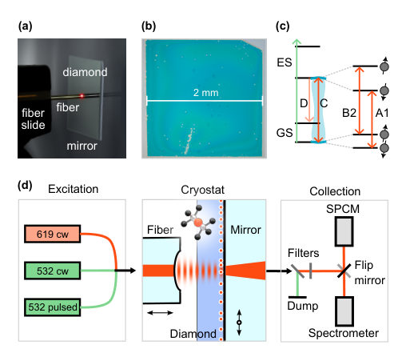
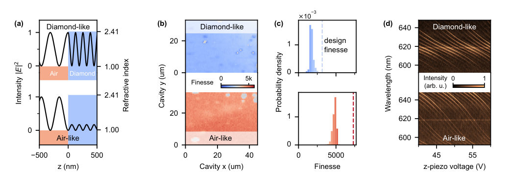
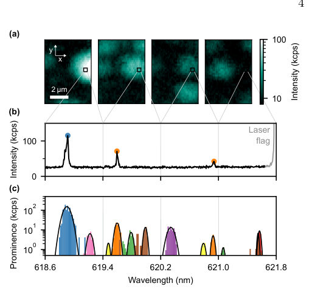
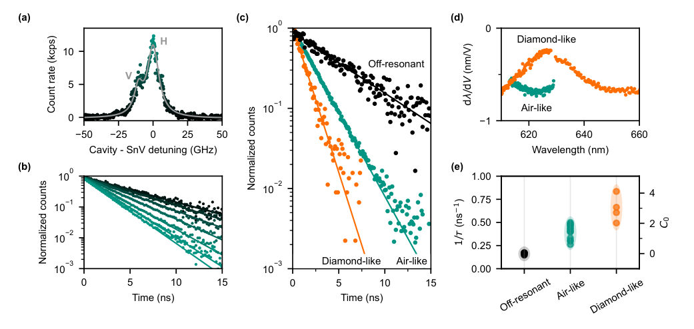
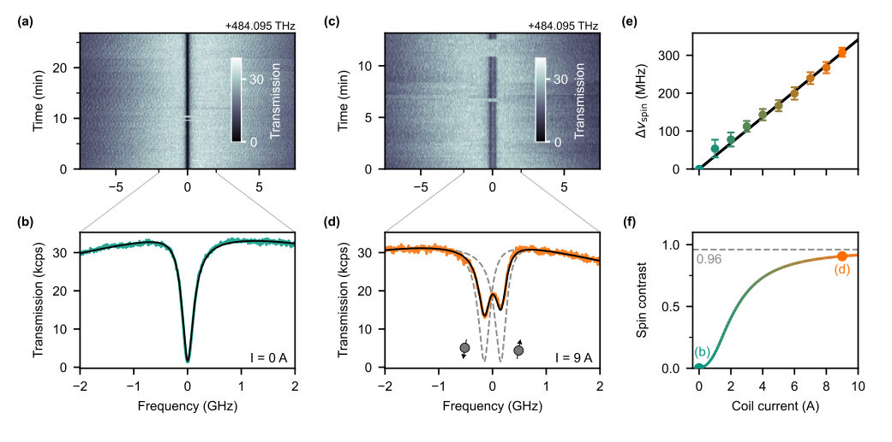
Summary. The research demonstrates that coupling tin-vacancy centers in diamond within a specialized Fabry-Pérot microcavity significantly enhances the efficiency of spin-photon interactions. By engineering the cavity mode into a 'diamond-like' regime, they achieved high cooperativity and successfully measured spin-selective optical transitions using an external magnetic field.
Why it may be interesting. This work directly addresses key challenges in solid-state quantum emitters: maximizing light-matter interaction (Purcell effect) while maintaining coherence, which is central to building scalable quantum networks using cavity QED principles.
Main problem. The goal is to establish a highly efficient spin-photon interface using tin-vacancy (SnV) centers in diamond for quantum network applications.
Main result. The authors demonstrated cavity enhancement of light-matter coupling, achieving a coherent cooperativity of $C = 4.0(14)$ and observing spin-selective optical transitions with high contrast ($\mathcal{C}_{ ext{spin}} = 0.91$).
Method. The experiment involves measuring resonant extinction spectroscopy on SnV centers coupled to a tunable Fabry-Pérot microcavity at cryogenic temperatures.
Model / system. The physical system is an open Fabry-Pérot microcavity containing low-roughness diamond membranes, which enhances the coupling between the cavity mode and the spin-photon interface provided by the SnV centers. The analysis uses concepts from cavity Quantum Electrodynamics (cQED).
Key observables. Coherent cooperativity ($C$), extinction contrast ($\mathcal{C}$), Purcell factor ($C_0$), and magnetic field splitting ($\delta u_{ ext{spin}}$).
Important parameters / regimes. Operating temperature down to 1 K; diamond-like mode enhancement ($C_0 = 4.1(1)$ vs $1.85(5)$); high spin contrast ($\mathcal{C}_{ ext{spin}} = 0.91$).
Assumptions / limitations. The primary assumption is that using low-roughness diamond membranes allows for field confinement in the 'diamond-like' regime, maximizing Purcell enhancement while maintaining mechanical stability.
Figures summary. Figures characterize hybrid air-diamond microcavity modes showing field intensity and finesse maps; later figures illustrate resonant extinction spectroscopy traces at zero and non-zero magnetic fields to extract cQED parameters.
Paper structure. The paper first establishes the superior coupling regime by comparing 'air-like' vs. 'diamond-like' cavity modes using Purcell enhancement calculations. It then proceeds to measure the coherent coupling strength ($C$) and finally investigates spin properties by applying a magnetic field to observe spin-resolved extinction.
The tin-vacancy (SnV) center in diamond is a promising spin-photon interface for quantum networks, combining favorable optical properties with spin coherence above 1K. Unfolding the full potential requires cavity enhancement to increase photon-emitter coupling efficiency. Here, we demonstrate cavity-enhanced light-matter coupling of SnV centers in a fully tunable Fabry-Pérot microcavity operating at temperatures down to 1K with in-situ magnetic field control. We access the diamond-like regime of hybrid cavity modes through integration of low-roughness diamond membranes, where the field is concentrated inside the diamond and Purcell enhancement is maximized. Diamond-like modes deliver a more than two-fold increase in the effective Purcell factor over air-like modes, reaching $C_0 = 4.1(1)$ compared to $C_0 = 1.85(5)$ in the air-like case, while simultaneously relaxing mechanical stability requirements. Resonant probing reveals coherent cavity-emitter coupling with 96% extinction contrast and a coherent cooperativity of $C = 4.0(14)$. By applying a magnetic field, we further achieve spin-resolved cavity extinction, observing spin-selective optical transitions with a contrast of ${\cal C}_{\rm spin} = 0.91$. These results establish SnV centers in diamond coupled to open Fabry-Pérot microcavities as a promising platform for efficient spin-photon interfaces.
Authors: Soumya Kanti Pal, Rupak Majumder, Shamik Gupta
Type: theory · Category: statistical mechanics · PDF: https://arxiv.org/pdf/2608.05052v1
Analysis basis: full PDF text, analyzed in chunks
Topic relevance: 🔥 methods for driven-dissipative 4/5 · Keldysh / 2PI / non-Gaussian methods 3/5 · analog quantum simulation 3/5 · correlated / nonlocal dissipation 3/5 · driven-dissipative phase transition 3/5 · Kondo & dissipative impurity 2/5 · entanglement & information structure 2/5 · non-equilibrium dynamics 2/5 · non-equilibrium universality 2/5 · measurement-induced transitions 1/5
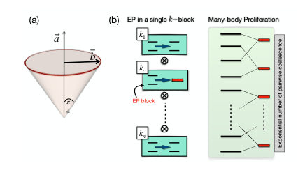
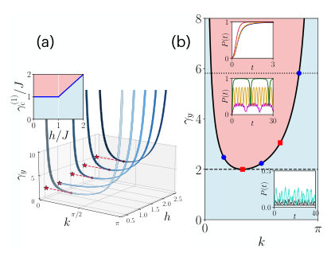
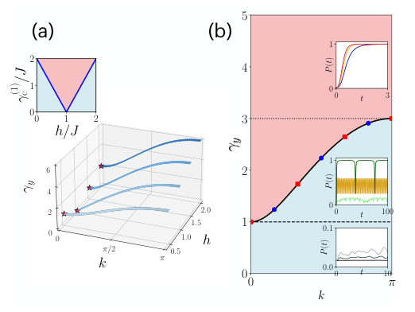
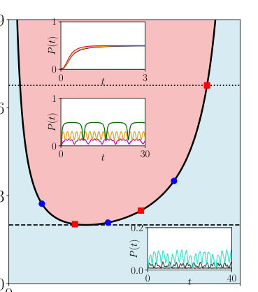
Summary. The paper presents a comprehensive framework using momentum-space deformation to design non-Hermitian Hamiltonians exhibiting tunable Exceptional Points. These EPs are shown to act as universal mechanisms capable of purifying arbitrary mixed quantum states. The results provide systematic protocols for engineering various types of non-Hermitian quantum matter.
Why it may be interesting. This work directly addresses open quantum systems by providing a powerful tool (EPs) to engineer dissipation or coherence control, which is highly relevant for understanding decoherence and state preparation in complex physical platforms.
Main problem. The work develops a general design principle for creating and controlling Exceptional Points (EPs) in quadratic many-body Hamiltonians, while also establishing EPs as a universal mechanism for purifying arbitrary mixed quantum states.
Main result. Momentum-space deformation provides a unified route to engineer EPs, which fundamentally allows for the purification of mixed quantum states, exhibiting distinct odd-even system-size dichotomies in the thermodynamic limit.
Method. The analysis uses momentum-space decomposition of quadratic fermionic Hamiltonians and introduces non-Hermitian deformations ($\mathbf{H}_{ ext{nH}, k} = \mathbf{H}^{(1)} - i\mathbf{H}^{(2)}$) to systematically tune parameters towards EP conditions.
Model / system. The primary model is the quadratic free fermionic Hamiltonian (e.g., Transverse Field Ising Chain), analyzed in momentum space via Bloch Hamiltonians $\hat{H}_k$. The non-Hermiticity is introduced through controlled deformations ($\gamma$).
Key observables. Normalized purity $P(t)$, eigenvalue/eigenvector coalescence, and the existence of EPs at critical deformation strengths ($\gamma^{(c)}$).
Important parameters / regimes. Deformation strength $\gamma$ relative to critical thresholds ($\gamma^{(1)}_c, \gamma^{(2)}_c$), system size parity (odd vs. even $L$).
Assumptions / limitations. The analysis is restricted to quadratic BdG Hamiltonians; purification proofs rely on the existence of a Jordan canonical form structure.
Figures summary. Figures illustrate the geometric conditions for EPs in parameter space and show the exponential proliferation of eigenvector coalescences induced by an EP within a single momentum block.
Paper structure. The paper establishes the general framework using momentum-space deformation, details the EP criteria, demonstrates state purification dynamics across different deformation regimes ($\gamma$), and concludes with protocols for engineering various non-Hermitian couplings (short/long-range).
Exceptional points (EP's) are a hallmark of non-Hermitian quantum systems. We show that momentum-space deformation provides a general design principle for creating and controlling EP's in quadratic many-body Hamiltonians. We identify universal criteria for the momentum sectors to host EP's and the corresponding critical deformation strengths, while revealing that a single momentum-sector EP induces quite remarkably an exponential proliferation of many-body eigenvector coalescences. We further establish EP's as a universal mechanism for purifying arbitrary mixed quantum states, uncovering distinct purification regimes and a fundamental odd-even system-size dichotomy in the thermodynamic limit. Our framework also provides a systematic reverse-engineering protocol for generating short- and long-range, reciprocal and nonreciprocal non-Hermitian quantum matter, together with an explicit Lindblad embedding. These results thus establish momentum-space deformation as a unified route to exceptional-point engineering and controlled design of many-body non-Hermitian quantum systems.
Authors: Ashutosh Rathi, Keisuke Oshimi, Kento Sasaki, Kensuke Kobayashi, Yutaka Shikano, Oliver Benson, Tim Schröder, Shery L. Y. Chang, Masazumi Fujiwara
Type: both · Category: other · PDF: https://arxiv.org/pdf/2608.04489v1
Analysis basis: full PDF text, analyzed in chunks
Topic relevance: 🔥 QC/QI experiment 4/5 · methods for driven-dissipative 3/5 · spintronics-quantum-optics interface 3/5 · analog quantum simulation 2/5 · correlated / nonlocal dissipation 2/5 · driven-dissipative phase transition 2/5 · Keldysh / 2PI / non-Gaussian methods 1/5 · Kondo & dissipative impurity 1/5 · entanglement & information structure 1/5 · exotic spin models in light-matter 1/5 · non-equilibrium dynamics 1/5 · non-equilibrium universality 1/5 · quantum measurements 1/5 · quantum optics experiment 1/5
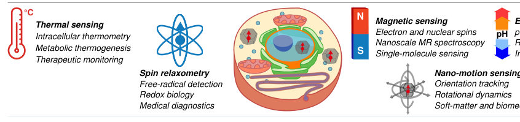
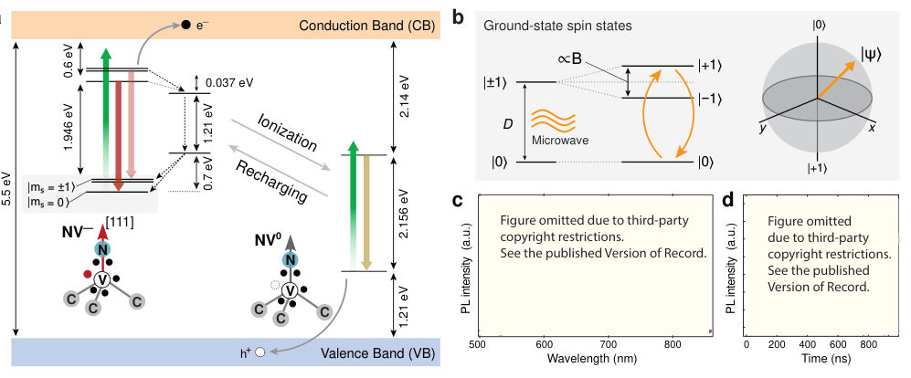
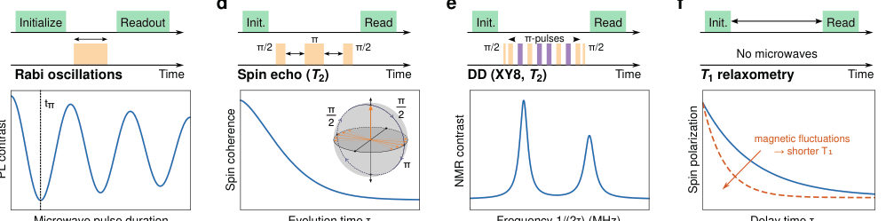
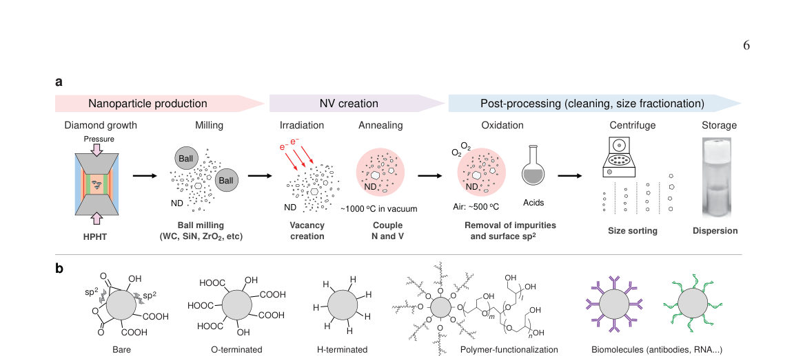
Summary. This paper reviews the use of NV centers in nanodiamonds for advanced quantum sensing applications. It details that while NDs offer portability, their small size introduces significant material constraints like lattice strain and surface noise that degrade spin coherence times compared to bulk diamond. The authors provide a structured view of these physical limitations alongside necessary mitigation strategies.
Why it may be interesting. This work is highly relevant to AMO physics and open quantum systems because it models decoherence mechanisms ($T_1, T_2$) in a solid-state platform where environmental coupling (surface charges, strain) dictates the coherence limit, moving beyond idealized bulk models.
Main problem. The primary challenge is understanding and mitigating material constraints, such as lattice strain and surface noise, that degrade the performance of nitrogen-vacancy (NV) centers when embedded in nanodiamonds for quantum sensing.
Main result. While NDs are excellent mobile probes for biosensing, their nanoscale confinement introduces complex, intertwined noise mechanisms compared to bulk diamond, necessitating advanced material engineering strategies for robust operation.
Method. The work combines theoretical analysis of physical constraints with experimental characterization using optical detection techniques like Optically Detected Magnetic Resonance (ODMR) and spin relaxation measurements.
Model / system. The system is the NV center in diamond, specifically focusing on the negatively charged $ ext{NV}^-$ state. The behavior is governed by ground-state Hamiltonian terms including zero-field splitting, Zeeman interaction, and strain/electric field coupling.
Key observables. Spin relaxation times ($T_1$ and $T_2$), spin-dependent photoluminescence (PL) contrast, and the sensitivity of ODMR signals to external fields (B, T, E).
Important parameters / regimes. Nanoscale dimensions, lattice strain magnitude, surface charge density, and particle-to-particle variability.
Assumptions / limitations. The analysis assumes that NV centers are optically addressable via their spin-triplet ground state ($S=1$) and that performance degradation is primarily due to nanoscale material imperfections.
Figures summary. Figures illustrate the electronic structure of $ ext{NV}^-$ (PL spectra, spin dynamics) and summarize sensing principles using various ODMR protocols (cw vs. pulsed).
Paper structure. The paper establishes the promise of NDs as mobile sensors, details the fundamental physics of NV readout, analyzes how nanoscale confinement introduces specific noise channels (strain/surface), and concludes with mitigation strategies for robust quantum operation.
Optically addressable solid-state spin defects have emerged as powerful multimodal quantum sensors, with nitrogen-vacancy (NV) centers in bulk diamond providing benchmark quantum control and sensitivity under ambient conditions. Embedding such defects in nanodiamonds (NDs) extends these capabilities to mobile probes capable of accessing complex biological and nanoscale environments. Reduced dimensions, however, introduce constraints beyond volumetric spin impurities, notably enhanced lattice strain and surface-induced noise sources, which shorten NV spin relaxation times (T1 and T2) and destabilize the NV charge state, as well as resulting in pronounced particle-to-particle variability in NDs typically produced by top-down approaches. These effects complicate both sensing performance and the quantitative interpretation of multimodal signals in realistic environments. This article provides a structured perspective on the physical mechanisms by which material properties constrain NV behavior in NDs, together with mitigation strategies that shape the robust use of these mobile quantum sensors for biosensing and nanoscale science.
Authors: Francesca Famà, Stefano Dello Russo, Stefano Giaccari, Salvatore Virzì, Lorenzo Lucia, Cecilia Clivati, Chiara Gionco, Mario Siciliani de Cumis, Stefano Condio, Erik Cerrato, Gianluca Bertaina, Alice Meda, Marco Gramegna, Marco Genovese, Filippo Levi, Ivo Pietro Degiovanni, Davide Calonico
Type: both · Category: quantum information and computing · PDF: https://arxiv.org/pdf/2608.04684v1
Analysis basis: full PDF text, analyzed in chunks
Topic relevance: 🔥 quantum optics experiment 4/5 · correlated cavity matter 3/5 · driven-dissipative phase transition 3/5 · interference shaping light 3/5 · Keldysh / 2PI / non-Gaussian methods 2/5 · Tavis-Cummings & cavity-many-emitter 2/5 · non-equilibrium dynamics 2/5 · QC/QI experiment 1/5 · methods for driven-dissipative 1/5 · non-equilibrium universality 1/5 · quantum measurements 1/5 · superradiant laser 1/5
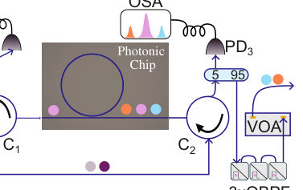
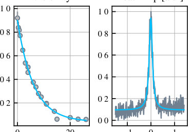
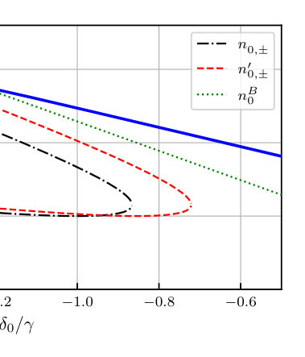
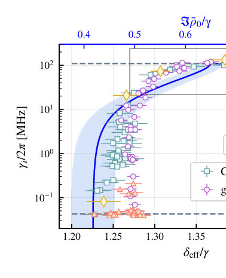
Summary. This paper characterizes the spectral evolution of two-photon emission in high-Q microresonators as they approach an Optical Parametric Oscillator threshold. By combining time-correlation measurements with advanced theoretical modeling, the authors track how the photon pair linewidth narrows from a cavity-limited value toward the pump laser's natural linewidth. This comprehensive characterization is vital for engineering stable and scalable integrated quantum light sources.
Why it may be interesting. This work provides a detailed roadmap for characterizing nonlinear quantum sources, which is crucial for developing integrated quantum network components. The ability to track spectral coherence across the spontaneous-to-coherent transition using multiple diagnostic tools (time correlation vs. phase measurement) is highly valuable for quantum optics research.
Main problem. The study investigates how the spectral coherence of two-photon emission evolves as a nonlinear microresonator transitions from spontaneous quantum pair generation to an optical parametric oscillation (OPO) regime.
Main result. The linewidth is observed to evolve continuously, transitioning from a cavity-lifetime-limited scale in the low-power regime toward the pump-linewidth scale near OPO onset. Theoretical analysis confirms this transition using piecewise fitting functions based on detuning.
Method. The work combines time-correlation measurements (probing $g^{(2)}$) and phase-sensitive techniques like heterodyne beating to characterize coherence, supplemented by advanced theoretical modeling using QuantumCumulants.
Model / system. The physical platform is a high-Q silicon nitride microresonator where photon pairs are generated via third-order Four-Wave Mixing (FWM). The dynamics are modeled across regimes ranging from spontaneous quantum emission to coherent OPO, requiring analysis of first and second-order correlation functions.
Key observables. Emission linewidth evolution, first-order coherence function ($g^{(1)}( au)$), second-order correlation function ($g^{(2)}$), and effective detuning ($\delta_{ ext{eff}}$).
Important parameters / regimes. Cavity lifetime ($\sim 3 ext{ ns}$), pump-linewidth scale, OPO threshold, and the effective detuning $\delta_{ ext{eff}}(\omega_p)$.
Assumptions / limitations. Correlation measurements ($g^{(2)}$) are assumed to follow Siegert relations below threshold but fail above it; theoretical models often rely on large-occupation/mean-field approximations.
Figures summary. Figures illustrate the experimental setup for pair generation and detuning measurement, alongside schematics detailing coincidence counting and interferometric measurements used to probe coherence functions across different power regimes.
Paper structure. The paper progresses from describing the physical system (FWM in $ ext{Si}_3 ext{N}_4$ resonators) to outlining multiple experimental techniques for measuring coherence ($g^{(1)}, g^{(2)}$). It then details theoretical modeling, showing how analytic solutions must switch between different functional forms depending on whether the system is oscillatory or overdamped relative to the OPO threshold.
High-Q silicon nitride microresonators are versatile sources for generating photon pairs via four-wave mixing. We investigate the spectral coherence of this process, tracking the transition from the spontaneous quantum regime to the onset of optical parametric oscillation. By combining time-correlation measurements with phase-sensitive measurements, we continuously monitor the emission linewidth as it evolves from a cavity-lifetime-limited linewidth toward the pump-linewidth scale. This characterization is essential for optimizing integrated sources for scalable quantum networks.
Authors: Kilian Seibold
Type: theory · Category: other · PDF: https://arxiv.org/pdf/2608.05046v1
Analysis basis: full PDF text, analyzed in chunks
Topic relevance: 🔥 methods for driven-dissipative 4/5 · Keldysh / 2PI / non-Gaussian methods 3/5 · driven-dissipative phase transition 3/5 · correlated / nonlocal dissipation 2/5 · correlated cavity matter 2/5 · non-equilibrium dynamics 2/5 · non-equilibrium universality 2/5 · Tavis-Cummings & cavity-many-emitter 1/5 · measurement-induced transitions 1/5 · quantum measurements 1/5




Summary. The paper introduces an operational spectral theory for Liouvillians that moves beyond just calculating decay rates by incorporating how input sources and measurement readouts couple to the system's modes. Using this framework on driven Kerr resonators, the authors demonstrate that specific preparation geometries can suppress unwanted dynamics or isolate distinct relaxation pathways. This provides a powerful diagnostic tool for understanding complex open quantum optical systems.
Why it may be interesting. This work is highly relevant as it provides a rigorous mathematical toolset for analyzing open quantum systems dynamics beyond simple spectral decomposition, directly linking theoretical structure (eigenoperators) to measurable experimental protocols (preparation/readout).
Main problem. To develop an operational spectral theory for Liouvillians that characterizes not only decay rates (eigenvalues) but also precisely how quantum modes are excited, propagated, and detected in a specific experimental protocol.
Main result. The framework shows that preparation geometry and slow-sector propagation provide complementary operational information beyond just the eigenvalues, allowing identification of mode suppression and separation of relaxation channels in driven Kerr resonators.
Method. The theory utilizes matched left and right eigenoperators ($\hat{\ell}_k$ and $\hat{r}_k$) associated with the Liouvillian spectrum to define an operational modal weight that governs excitation and readout overlap.
Model / system. The study focuses on open quantum systems, specifically driven Kerr resonators, whose dynamics are governed by a Lindblad master equation derived from a Hamiltonian involving nonlinearity and external drives.
Key observables. Left/right eigenoperators ($\hat{\ell}_k, \hat{r}_k$), modal weight ($w_k$), excitation factor ($E_k$), detection factor ($D_k$), and residues ($R_{AB}^k$) for stationary correlations.
Important parameters / regimes. The Kerr nonlinearity strength ($U$), drive strengths ($F, G$), and the spectral gap/slow subspace definition are key parameters governing the dynamics.
Assumptions / limitations. The analysis assumes a finite-dimensional Liouville space and often requires checking multiple conditions (positivity, trace-one) to ensure that projected reduced models remain valid Markov generators.
Figures summary. Figures illustrate the operational anatomy, showing spectral features like gap modes, steady-state Wigner functions, right-mode symbols, and coherent-state excitation maps derived from the theory.
Paper structure. The paper builds from defining the general Liouvillian spectrum to introducing left/right eigenoperators. It then applies this framework to analyze specific physical phenomena in Kerr resonators, including mode suppression and stationary correlation analysis via residues, concluding with extensions to perturbation theory on slow manifolds.
Liouvillian eigenvalues determine decay rates and oscillation frequencies, but not how the corresponding modes are excited, propagated, and detected in a chosen protocol. We develop an operational spectral theory based on matched left and right eigenoperators. Left eigenoperators determine excitation by an input or source; right eigenoperators determine the propagated density deformation and readout overlap; their product is a gauge-invariant modal weight. For bosonic systems, coherent preparations turn left eigenoperators into phase-space excitation maps whose zeros identify mode-selective suppression, while right eigenoperators yield the corresponding Wigner deformations. Resolved slow subspaces define operational coordinates and, when positivity and Markov-admissibility hold, a projected routing generator. In driven Kerr resonators, the framework identifies preparations that suppress a switching mode, separates symmetry-resolved relaxation channels, and reveals bias-induced crossovers in projected multichannel routing while the coherent-preparation partition continues to deform. Preparation geometry and slow-sector propagation thus provide complementary operational information beyond Liouvillian eigenvalues alone.
Authors: Yuhua Ren, Gaomin Tang, Hui Pan, Jian-Sheng Wang
Type: theory · Category: statistical mechanics · PDF: https://arxiv.org/pdf/2608.04558v1
Analysis basis: full PDF text, analyzed in chunks
Topic relevance: 🔥 methods for driven-dissipative 4/5 · 🔥 non-equilibrium dynamics 4/5 · Keldysh / 2PI / non-Gaussian methods 3/5 · driven-dissipative phase transition 3/5 · non-equilibrium universality 2/5 · Kondo & dissipative impurity 1/5 · analog quantum simulation 1/5 · correlated / nonlocal dissipation 1/5 · correlated cavity matter 1/5
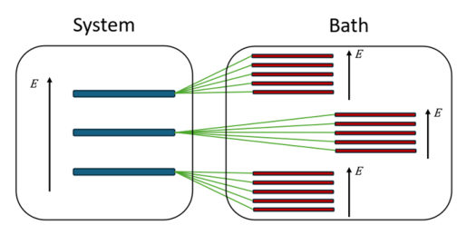
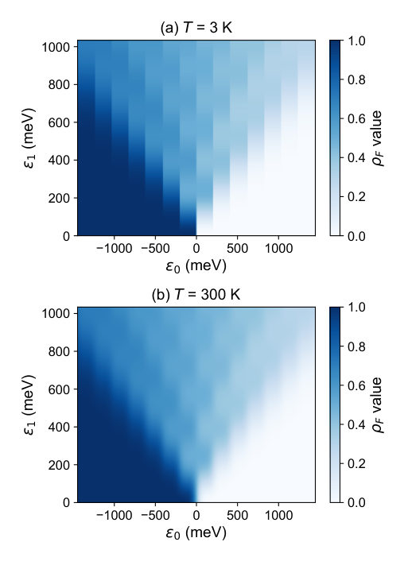
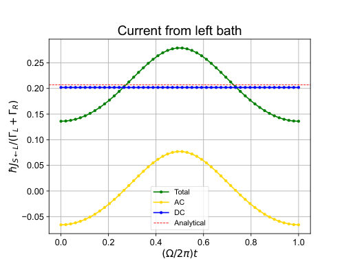
Summary. This paper develops an analytical method using Nonequilibrium Green's Functions combined with Floquet theory to characterize the steady-state statistics of quantum systems periodically coupled to a bath. It successfully derives the characteristic Floquet Fermi distribution and generalizes fundamental transport relations like the Landauer formula for these driven, open systems.
Why it may be interesting. This work provides a rigorous, unified theoretical framework connecting time-periodic driving (Floquet engineering) directly to non-equilibrium statistical mechanics for open quantum systems, which is highly relevant for understanding driven nanoscale devices.
Main problem. The primary goal is deriving an analytical expression for the steady-state quantum statistics of periodically driven quantum systems coupled to a bath.
Main result. The authors derive the Floquet Fermi distribution, showing that the steady-state occupation is a weighted sum of shifted Fermi functions. They also establish a generalized Landauer formula for DC current in this regime.
Method. The work combines Nonequilibrium Green's Function (NEGF) formalism with Floquet theory to handle time-periodic driving and coupling to an environment.
Model / system. The system consists of a quantum system periodically driven by an external field and coupled to a thermal bath. The analysis is general, extending beyond simple commuting Hamiltonians.
Key observables. Steady-state quantum statistics (occupation distribution), retarded/advanced/lesser Green's functions, and the DC component of the current.
Important parameters / regimes. The driving frequency ($\Omega$), temperature ($T$), and the spectral function of the bath are key parameters governing the steady state.
Assumptions / limitations. Assumptions include weak system-bath coupling ($\Gamma o 0^+$) and utilizing the Floquet representation to manage time dependence, though extensions beyond ideal baths are shown.
Paper structure. The paper builds a coherent description by first embedding Floquet theory into NEGF, deriving closed-form expressions for Green's functions in the Floquet basis. It then applies this to determine the steady-state statistics and finally generalizes transport formulas like Landauer's.
We derive an analytical expression for the steady-state quantum statistics of periodically driven quantum systems coupled to a bath using the nonequilibrium Green's function (NEGF) formalism. By embedding Floquet theory into NEGF, we obtain closed expressions for the retarded, advanced, and lesser Green's functions in the Floquet representation, yielding the Floquet Fermi distribution in which the steady-state occupation is expressed as a weighted sum of Fermi functions shifted by integer multiples of the driving frequency. The weights are determined solely by the Fourier components of the micromotion operator, providing a transparent interpretation of Floquet sideband occupations. Our analysis extends beyond the diagonal commuting Hamiltonians treated in earlier work, and further shows that the robust Floquet distribution remains valid for a broad class of weakly coupled bath spectral functions beyond the ideal featureless-bath approximation. Finally, we establish a Floquet version of the Landauer formula for the DC part of the current, in which the equilibrium Fermi functions are replaced by their Floquet-modified counterparts. Together, these results provide a coherent description of Floquet quantum statistics and transport in periodically driven open quantum systems.
Authors: Ling-Long Gao, Yan Liu, Hong-Da Lyu
Type: theory · Category: statistical mechanics · PDF: https://arxiv.org/pdf/2608.04522v1
Analysis basis: full PDF text, analyzed in chunks
Topic relevance: 🔥 non-equilibrium universality 4/5 · Keldysh / 2PI / non-Gaussian methods 3/5 · driven-dissipative phase transition 3/5 · entanglement & information structure 2/5 · methods for driven-dissipative 2/5 · non-equilibrium dynamics 2/5 · analog quantum simulation 1/5 · correlated / nonlocal dissipation 1/5 · correlated cavity matter 1/5
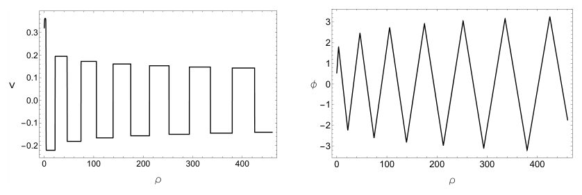
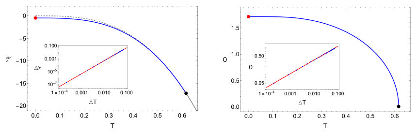
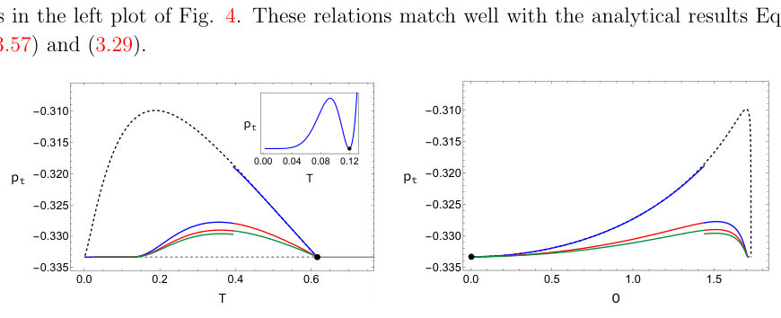
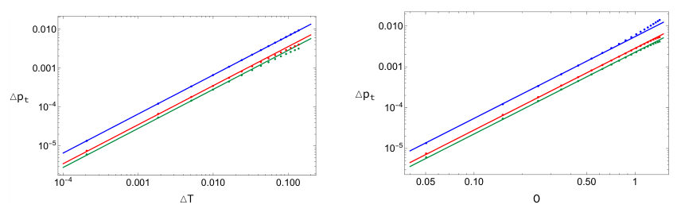
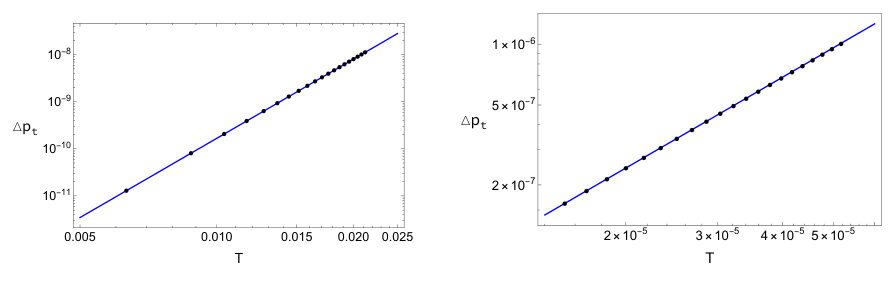
Summary. This paper analyzes how holographic phase transitions dictate the scaling laws observed in the anisotropic Kasner geometry inside black holes. It derives specific power-law scalings for the deviation of the Kasner exponents near criticality, showing that these patterns persist across multiple interior epochs. The work connects boundary critical phenomena to the deep spacetime structure via advanced gravitational and thermodynamic techniques.
Why it may be interesting. While primarily in gravity/QFT, the study of phase transitions (criticality, multicriticality) and the connection between bulk geometry and boundary thermodynamics is highly relevant to understanding critical phenomena in strongly coupled quantum systems.
Main problem. The study investigates how holographic phase transitions imprint their scaling laws onto the local Kasner geometry within Einstein-scalar black holes.
Main result. The deviation of the first-epoch Kasner exponent scales according to a power law dependent on the critical order ($r$), and later epochs inherit the same temperature exponent as the initial one.
Method. The analysis employs perturbative methods, scaling symmetries, and Infrared (IR) matching techniques to connect boundary critical behavior to the black hole interior dynamics.
Model / system. The system is a 4D Einstein-scalar gravity model dual to a boundary field theory deformed by a double-trace operator. The geometry involves hairy black holes whose interiors are analyzed using Kasner-like solutions.
Key observables. Kasner exponents ($p_t, p_x, p_\phi$), the boundary condensate ($\alpha$), and the renormalized free energy density ($F$).
Important parameters / regimes. The critical order $r$ (ordinary $r=1$, tricritical $r=2$, etc.), temperature deviation $(T_c-T)$, and the leading irrelevant exponent of the IR fixed point.
Assumptions / limitations. The analysis focuses on super-exponential scalar potentials, and certain results rely on assuming only decreasing transitions exist in the interior evolution.
Figures summary. Figures schematically illustrate the sequence of infinitely many Kasner epochs separated by bounces inside the black hole, and one figure shows a special hairy solution exhibiting a Schwarzschild-like interior despite exterior hair.
Paper structure. The paper progresses from establishing the general framework using planar ansatz solutions to deriving scaling laws for the first epoch. It then analyzes sequences of subsequent epochs, connects low-temperature behavior to IR fixed points, and finally discusses screening mechanisms that can revert the interior dynamics to a simple Schwarzschild form.
We study how holographic phase transitions imprint their scaling laws on the local Kasner geometry inside Einstein-scalar black holes. At fixed double-trace coupling, we derive the near-critical scaling of the deviation of the first-epoch Kasner exponent from the Schwarzschild value: $p_t^{(1)}+\frac{1}{3} \propto O^2 \propto (T_c-T)^{1/r}$, where $O$ denotes the boundary condensate and $r$ labels ordinary criticality ($r=1$), tricriticality ($r=2$), and higher multicriticality ($r\geq3$). A super-exponential scalar potential generates a sequence of Kasner epochs separated by scalar-field bounces. We further find that any later epoch that can be tracked continuously across the transition inherits the same temperature exponent, while its coefficient depends on the epoch. Numerical solutions confirm these predictions for the ordinary and tricritical cases. Finally, we show analytically that the leading irrelevant exponent of the infrared fixed point governs the low-temperature Kasner scaling, and verify the resulting scaling numerically for the first Kasner exponent.
Authors: Tarun Dutta, Jasper Phua Sing Cheng, Alex Jin, Sergi Ramos-Calderer, José Ignacio Latorre, Manas Mukherjee
Type: experiment · Category: other · PDF: https://arxiv.org/pdf/2608.04128v1
Analysis basis: full PDF text, analyzed in chunks
Topic relevance: 🔥 QC/QI experiment 4/5 · quantum measurements 3/5 · quantum optics experiment 3/5 · entanglement & information structure 2/5 · measurement-induced transitions 2/5 · analog quantum simulation 1/5 · correlated / nonlocal dissipation 1/5 · driven-dissipative phase transition 1/5 · interference shaping light 1/5 · non-equilibrium dynamics 1/5
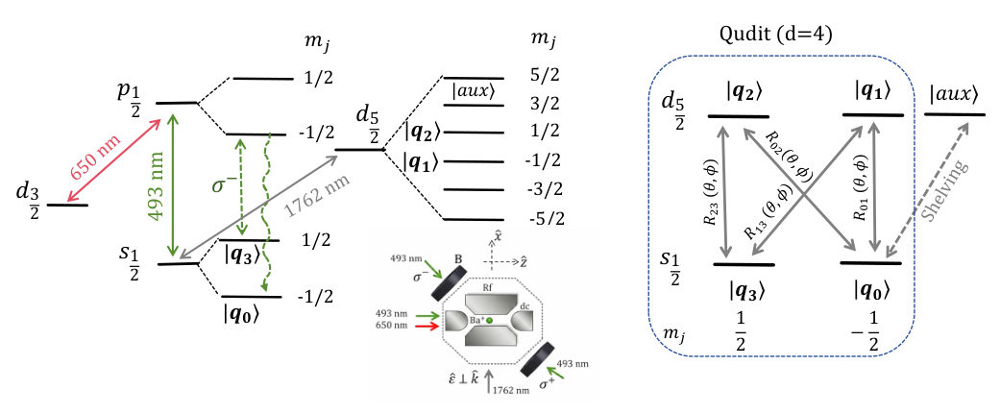
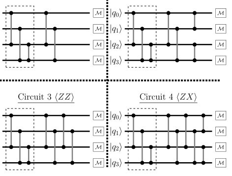
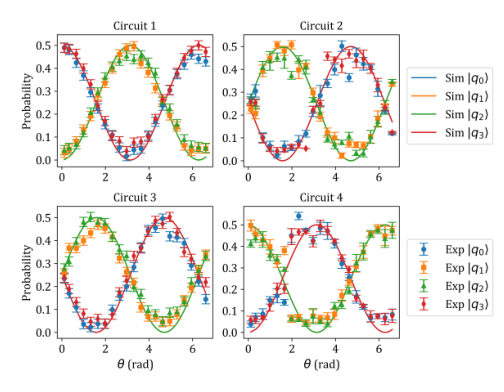
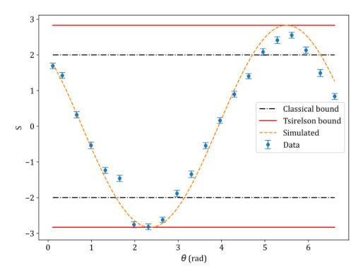
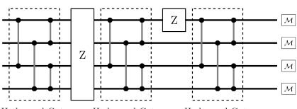
Summary. The authors demonstrate a versatile architecture using a single trapped ion to realize both complex quantum computation and contextuality measurements. They successfully implemented an entanglement-free Grover search and measured strong violations of a CHSH inequality. This establishes the platform as a powerful tool for investigating fundamental relationships between coherence, non-classicality, and quantum information processing.
Why it may be interesting. This work is highly relevant as it combines advanced concepts from open quantum systems (decoherence analysis) with fundamental tests of non-classicality (contextuality) and computational primitives (Grover's search) all within the well-established, high-fidelity framework of trapped ions.
Main problem. The research aims to disentangle the roles of coherent interference and quantum contextuality by implementing both concepts within a single, programmable physical system.
Main result. They successfully demonstrated an entanglement-free Grover search with high probability (up to 94.5%) and measured a significant violation of the CHSH inequality ($S = 2.816 \pm 0.082$), approaching the Tsirelson bound.
Method. The study uses coherent optical rotations on a trapped ion qudit to perform quantum algorithms and measure contextuality via single-qudit measurements.
Model / system. The platform is a programmable four-dimensional optical qudit encoded in a single trapped $^{138} ext{Ba}^+$ ion, utilizing metastable states. Universal control over the $d=4$ Hilbert space is achieved through specific resonant optical transitions.
Key observables. Target-state identification probabilities for Grover's search; the CHSH parameter $S$; state preparation fidelity ($F$).
Important parameters / regimes. The maximum measured violation of $S = 2.816 \pm 0.082$, which approaches the Tsirelson bound ($\approx 2.828$); single-qudit $\pi$-pulse fidelity of $(98.8 \pm 0.3)\%$.
Assumptions / limitations. The primary limitations are attributed to laser-induced decoherence, coherent control errors, and state-detection infidelity.
Figures summary. Figures illustrate the energy level structure and pulse sequences for quantum control; one figure shows the Grover circuit diagram in a single qudit; another displays the measured CHSH parameter $S$ vs. rotation angle $ heta$, showing violation above the classical limit.
Paper structure. The paper progresses by first establishing universal coherent control over the qudit, then implementing and measuring an entanglement-free quantum algorithm (Grover's search), followed by demonstrating contextuality measurements using a CHSH inequality on the same hardware.
Quantum computational advantage is generally attributed to coherent interference and other non-classical resources, yet their respective roles remain difficult to disentangle in experimental platforms where multipartite entanglement is inherently present. High-dimensional quantum systems provide an attractive route for investigating these resources while simultaneously reducing hardware overhead for quantum information processing. Here we realize a programmable four-dimensional optical qudit encoded in a single trapped $^{138}\mathrm{Ba}^{+}$ ion and demonstrate universal coherent control through phase-programmable optical rotations. Using this platform, we implement an entanglement-free realization of Grover's quantum search algorithm, achieving target-state identification probabilities of up to $94.5\pm2.0\%$. Within the same processor, we further demonstrate state-dependent quantum contextuality through a Clauser--Horne--Shimony--Holt (CHSH)-type noncontextuality inequality, obtaining a maximum violation of $S = 2.816 \pm 0.082$, in close agreement with the Tsirelson bound. By integrating programmable quantum computation and contextuality measurements within a single multilevel trapped-ion platform, our work establishes a versatile architecture for investigating the relationship between coherent interference and contextuality in quantum information processing and provides a scalable route toward high-dimensional quantum technologies.
Authors: Zhouhao Guo, Jiaju Zhang
Type: theory · Category: statistical mechanics · PDF: https://arxiv.org/pdf/2608.04696v1
Analysis basis: full PDF text, analyzed in chunks
Topic relevance: 🔥 analog quantum simulation 4/5 · 🔥 non-equilibrium dynamics 4/5 · non-equilibrium universality 3/5 · entanglement & information structure 2/5 · scars & prethermalization 2/5 · correlated / nonlocal dissipation 1/5 · driven-dissipative phase transition 1/5 · exotic spin models in light-matter 1/5 · methods for driven-dissipative 1/5
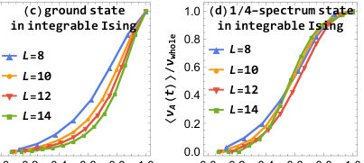
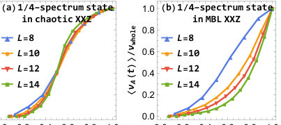
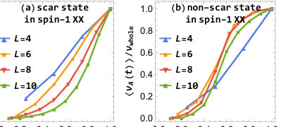
Summary. The authors propose a novel diagnostic using a perturbed eigenstate quench to test the Eigenstate Thermalization Hypothesis (ETH) at the level of individual energy eigenstates. By analyzing the time-averaged subsystem evolution speed versus system size ratio, they distinguish ETH-obeying states (S-shaped curve) from non-thermalizing ones (J-shaped curve). This method is robustly tested across diverse 1D spin chain models.
Why it may be interesting. This provides a powerful, computationally feasible probe for understanding thermalization dynamics in isolated quantum systems without needing to construct full thermal ensembles, which is highly relevant for AMO platforms simulating many-body physics.
Main problem. The paper aims to develop an efficient, single-eigenstate diagnostic tool to test the Eigenstate Thermalization Hypothesis (ETH) in isolated quantum many-body systems.
Main result. A novel quench protocol distinguishes ETH-obeying eigenstates, which show an S-shaped curve with an inflection point at half system size, from ETH-violating states, which exhibit a convex J-shape.
Method. The diagnostic uses a 'perturbed eigenstate quench' protocol, evolving a weakly perturbed initial state $|\psi(0) angle$ under the original Hamiltonian and measuring the time-averaged subsystem evolution speed $\langle v_A(t) angle$.
Model / system. The method is benchmarked across various 1D spin chains, including chaotic/integrable Ising models, disordered XXZ chains (covering ergodic to MBL regimes), and a spin-1 XX chain exhibiting scar states.
Key observables. Time-averaged subsystem evolution speed $\langle v_A(t) angle$ plotted against the subsystem size ratio $x = \ell/L$.
Important parameters / regimes. The perturbation strength ($\epsilon=10^{-3}$), and the system parameters defining different quantum regimes (e.g., disorder strength in XXZ chains).
Assumptions / limitations. The method assumes that the time-averaged speed $\langle v_A(t) angle$ provides a robust, qualitative distinction between thermalizing and non-thermalizing dynamics.
Figures summary. Figures compare the normalized evolution speed versus subsystem size ratio for different eigenstates (e.g., ground state vs. bulk states) across various Hamiltonian regimes.
Paper structure. The paper introduces the problem of single-eigenstate ETH testing, details the perturbed eigenstate quench methodology, presents the characteristic S-shaped vs. J-shaped signatures, and validates this diagnostic across multiple paradigmatic 1D spin chain models.
We propose and numerically validate an efficient single-eigenstate diagnostic for the eigenstate thermalization hypothesis (ETH) based on a perturbed eigenstate quench protocol. By introducing a weak random perturbation to an energy eigenstate to break its stationarity, we characterize the time-averaged subsystem evolution speed as a function of the subsystem-to-total system size ratio. The diagnostic relies on a robust qualitative distinction: eigenstates satisfying ETH exhibit an S-shaped curve with a clear inflection point near half the system size, while ETH-violating eigenstates display a convex J-shaped profile. We benchmark the criterion across paradigmatic one-dimensional spin chains covering chaotic, integrable, many-body localized, and quantum many-body scar regimes, obtaining full agreement with established thermalization phenomenology. Our method circumvents the need for explicit thermal ensemble construction, providing a robust, experimentally feasible probe of eigenstate thermalization at the single-eigenstate level.
Authors: Tong Liu
Type: theory · Category: disordered systems and neural networks · PDF: https://arxiv.org/pdf/2608.04762v1
Analysis basis: full PDF text, analyzed in chunks
Topic relevance: 🔥 non-equilibrium dynamics 4/5 · non-equilibrium universality 3/5 · analog quantum simulation 2/5 · entanglement & information structure 2/5 · scars & prethermalization 2/5 · Keldysh / 2PI / non-Gaussian methods 1/5 · correlated / nonlocal dissipation 1/5 · driven-dissipative phase transition 1/5 · methods for driven-dissipative 1/5
Summary. The paper unifies Many-Body Localization and Thermalization by introducing an emergent cyclic clock field whose correlator exhibits distinct asymptotic behaviors in each phase. This framework also introduces 'replica order' as a discrete diagnostic tool that allows researchers to distinguish between localized systems even if they share identical spatial correlation lengths.
Why it may be interesting. This work provides a powerful, unified mathematical tool—the emergent clock—to classify quantum thermalization behavior. The concept of 'replica order' offers a novel, discrete way to probe the depth of localization beyond simple spatial correlation measures, which is highly relevant for understanding complex many-body physics.
Main problem. The paper aims to find a single, unifying order parameter that can distinguish between Many-Body Localization (MBL) and Eigenstate Thermalization Hypothesis (ETH), as current diagnostics treat them separately.
Main result. An emergent cyclic clock field $r_x$ is introduced whose correlator exhibits three distinct asymptotic regimes corresponding precisely to MBL, critical, and ETH phases. Furthermore, replica order provides a discrete coordinate to distinguish localized dynamics sharing the same spatial correlation length.
Method. The authors analyze isolated unitary quantum dynamics by constructing a statistical mechanics over forward-backward history pairings, leading to an effective action for the emergent clock field.
Model / system. The analysis is performed on isolated unitary quantum systems, focusing on 'quantum histories' rather than just physical states. The mathematical framework involves replicating and folding these history pairs into a partition sum.
Key observables. Clock correlator $C_t(R)$, line tension ($\kappa_{ ext{el}}$), twist stiffness ($\kappa_{ ext{twist}}$), and the replica order ($t$).
Important parameters / regimes. The three asymptotic regimes (MBL, critical, ETH) define distinct values for $\kappa_{ ext{el}}$ and $\kappa_{ ext{twist}}$. The replica order $t$ acts as a discrete resolution parameter.
Assumptions / limitations. The analysis relies on coarse-graining history-pairing configurations in the infrared limit and assumes that higher-order invariants only become visible at specific, quantized replica orders ($t^\star$).
Figures summary. Figure 1 illustrates the emergence of the clock from noncyclic pairings. Figure 2 compares the three distinct clock regimes (MBL, Critical, ETH) via correlator magnitude and response costs ($\kappa_{ ext{el}}, \kappa_{ ext{twist}}$). Figure 3 demonstrates that replica order $t$ provides quantized resolution to distinguish dynamics otherwise indistinguishable by spatial correlation length.
Paper structure. The paper develops the concept of history-pairing statistical mechanics, identifies the emergent clock field and its three asymptotic regimes (MBL/Critical/ETH), establishes a central identity unifying coherence lengths, and finally introduces replica order $t$ as a secondary diagnostic coordinate to resolve ambiguities in localized dynamics.
Many-body localization (MBL) and eigenstate thermalization (ETH) are traditionally distinguished by a collection of separate diagnostics, not by a single order parameter. We show that replication and folding of isolated unitary dynamics generate a complex statistical mechanics of forward--backward history pairings and, in a closed cyclic infrared sector, an emergent clock $r_x\in\mathbb Z_t$. Its correlator has three distinct asymptotics: exponential decay in MBL, scale-free decay at criticality, and long-range locking in the thermal phase. A controlled $l$-bit reduction makes the clock action quasi-local, while its inverse correlation length obeys $ξ_{\rm pair}^{-1}=κ_{\rm el}=\ln|ρ_0/ρ_q|$, unifying history coherence, the defect line tension, and the transfer spectrum. Replica order supplies a second, discrete coordinate---the first order at which a hidden dynamical invariant becomes visible---and can distinguish localized dynamics that share the same spatial correlation length.
Authors: Santanu Singh, Surajit Bera, Chenyuan Li, Subir Sachdev, Sumilan Banerjee
Type: theory · Category: strongly correlated electrons · PDF: https://arxiv.org/pdf/2608.04098v1
Analysis basis: full PDF text, analyzed in chunks
Topic relevance: 🔥 entanglement & information structure 4/5 · non-equilibrium universality 3/5 · Keldysh / 2PI / non-Gaussian methods 2/5 · analog quantum simulation 2/5 · driven-dissipative phase transition 2/5 · Kondo & dissipative impurity 1/5 · correlated / nonlocal dissipation 1/5 · methods for driven-dissipative 1/5 · non-equilibrium dynamics 1/5
Summary. This paper investigates the entanglement entropy in strange metals using a solvable large-N model akin to Yukawa SYK. By calculating the second Rényi entropy, the authors show that the crossover between thermal and entanglement regimes follows universal scaling laws predicted by CFT theory. This confirms strong quantum correlations beyond simple Fermi liquid descriptions.
Why it may be interesting. While focused on condensed matter, the study of entanglement entropy scaling laws and critical behavior provides theoretical tools applicable to understanding quantum criticality in strongly interacting many-body systems relevant to AMO physics.
Main problem. The study addresses the entanglement entropy of gapless fermionic systems, specifically those exhibiting strange metal behavior without well-defined quasiparticles.
Main result. The crossover from thermal to entanglement entropy is captured by a single universal scaling ansatz, and for the critical strange metal, this curve follows the CFT form with an effective central charge larger than non-interacting values.
Method. The authors employ large-N field theory techniques, exactly computing the second Rényi entropy via imaginary-time path integrals and solving resulting saddle-point equations.
Model / system. The model is a solvable 1D lattice system analogous to the Yukawa-Sachdev-Ye-Kitaev (Yukawa SYK) model, coupling two Fermi points to scalar bosons via random Yukawa interactions.
Key observables. Second Rényi entropy of fermions ($S^{(2)}_A$), effective central charge ($c_{ ext{eff}}$), and the temperature/size dependence of entanglement entropy.
Important parameters / regimes. The system behavior is controlled by a parameter $\gamma$, defining regimes: Strange Metal (QCP, $\gamma = \gamma_c$), Ordered Phase ($\gamma < \gamma_c$), and Fermi Liquid (FL) Phase ($\gamma > \gamma_c$).
Assumptions / limitations. The analysis is restricted to the large-$N$ limit. The study also uses specific path integral formalisms and numerical techniques like recursive Green's function inversion.
Figures summary. Figures illustrate the model setup, a phase diagram showing the QCP separating FL from Strange Metal regimes, and plots demonstrating the scaling collapse of $S^{(2)}_A$ using CFT-like formulas.
Paper structure. The paper builds by first defining the physical problem (entanglement in strange metals), then detailing the mathematical machinery (large-$N$ saddle points, path integrals), presenting results across different temperature/size regimes, and finally deriving universal scaling laws.
The subsystem-size dependence of ground-state entanglement entropy and its crossover to thermal entropy as a function of temperature are well understood for one-dimensional (1D) gapless systems described by conformal field theory (CFT), and for free fermions with a Fermi surface in any dimension. However, little is known about the entanglement entropy for gapless fermionic systems without quasi-particles, such as a strange metal. Here we study the entanglement entropy of fermions in a solvable large-$N$ 1D lattice model akin to the Yukawa-Sachdev-Ye-Kitaev (Yukawa SYK) model. In this model, two Fermi points are coupled to scalar bosons via spatially random Yukawa interactions, providing a solvable model of a strange metal when the bosons become critical at a quantum critical point. We exactly compute the second Rényi entropy of fermions in a spatial subregion in this model. Our results unravel crucial role of intra-subregion entanglement between fermionic and bosonic degrees of freedom along with the inter-subregion entanglement in understanding the ground states of such strongly coupled fermion-boson systems. We show that the crossover from thermal entropy to entanglement entropy, is captured by a single scaling ansatz, that collapses the second Rényi entropy of fermions for different subregion sizes and temperatures into a single universal curve. We further show that the universal scaling curve for the critical strange metal is well described by the standard CFT formula, albeit with an effective central charge substantially larger than the non-interacting value.
Authors: Pradip Kattel, Abay Zhakenov, Natan Andrei
Type: theory · Category: statistical mechanics · PDF: https://arxiv.org/pdf/2608.04083v1
Analysis basis: full PDF text, analyzed in chunks
Topic relevance: 🔥 Kondo & dissipative impurity 4/5 · Keldysh / 2PI / non-Gaussian methods 3/5 · driven-dissipative phase transition 3/5 · non-equilibrium universality 2/5 · correlated / nonlocal dissipation 1/5 · entanglement & information structure 1/5 · methods for driven-dissipative 1/5 · non-equilibrium dynamics 1/5
Summary. This paper analyzes a $\mathscr{PT}$-symmetric Kondo model to study the entropy flow of impurities. Using advanced techniques like TBA and RG analysis, the authors map out four distinct impurity phases based on a non-Hermiticity parameter $\alpha$. The key finding is that while some phases show expected monotonic behavior, others exhibit nonmonotonic entropy flow, challenging simple assumptions about quantum renormalization group irreversibility.
Why it may be interesting. The investigation into non-Hermitian physics ($\mathscr{PT}$ symmetry) applied to strongly correlated impurity models provides insights into how spectral properties (like complex energies or zero modes) can violate standard thermodynamic theorems like RG irreversibility, which is crucial for understanding open quantum systems dynamics.
Main problem. The study investigates the breakdown of monotonic impurity entropy flow within $\mathscr{PT}$-symmetric multichannel Kondo systems.
Main result. While the standard Kondo phase shows monotonic entropy flow consistent with defect CFT, the zero-mode and local-moment phases exhibit nonmonotonic behavior, contradicting simple expectations of RG irreversibility.
Method. The analysis employs Renormalization Group (RG) flow techniques combined with a generalized Thermodynamic Bethe Ansatz (TBA) to calculate impurity free energy and entropy.
Model / system. The system is a $\mathscr{PT}$-symmetric non-Hermitian multichannel Kondo model involving two spin-$1/2$ impurities coupled to $n$ conduction electron channels via complex-conjugate couplings.
Key observables. Impurity free energy, Affleck–Ludwig $g$-function, and impurity entropy flow ($\text{Simp}$).
Important parameters / regimes. The dimensionless non-Hermiticity parameter $\alpha$, which dictates the phase diagram (Kondo, zero-mode, YSR, local moment).
Assumptions / limitations. The analysis relies on exact solutions derived from Bethe Ansatz methods and defect CFT concepts.
Figures summary. Figures illustrate the phase diagram mapping $\alpha$ to different Kondo regimes; they also show $\text{Simp}$ vs. $T/T_K$, demonstrating monotonic flow in some phases and nonmonotonicity (overshoots/undershoots) in others.
Paper structure. The paper first establishes the model Hamiltonian and parameters, then analyzes the RG flow across different regimes defined by $\alpha$. It details calculations using TBA to find thermodynamic quantities, culminating in a comparison between theoretical expectations of monotonicity and the actual nonmonotonic results found for specific phases.
We study a $\mathscr{PT}$-symmetric non-Hermitian multichannel Kondo model consisting of a pair of spin-$\frac12$ impurities coupled to $n$ conduction-electron channels through complex-conjugate Kondo couplings. The impurity renormalization-group (RG) flow is characterized by the Kondo scale $T_K$ and a dimensionless non-Hermiticity parameter $α$. As $α$ increases, the exact Bethe Ansatz solution exhibits four impurity phases: overscreened Kondo, zero mode, Yu--Shiba--Rusinov (YSR), and local moment. The Kondo, zero-mode, and local-moment phases are $\mathscr{PT}$-unbroken, whereas the YSR phase spontaneously breaks $\mathscr{PT}$ symmetry. Using a generalized thermodynamic Bethe Ansatz, we determine the impurity free energy and Affleck--Ludwig $g$-function throughout the $\mathscr{PT}$-unbroken phases. In the Kondo phase, the defect RG flow connects the ultraviolet and infrared conformal fixed points, with the impurity entropy flowing from $2\ln2$ to $2\ln\left[2\cos\left(\fracπ{n+2}\right)\right]$, in agreement with defect conformal field theory. In the zero-mode phase, zero-energy impurity strings reorganize the spectrum into multiple excitation towers, while in the local-moment phase, the RG flow becomes cyclic, returning to the unscreened local-moment fixed point. We conjecture that RG irreversibility, and hence a generalized Affleck--Ludwig $g$-theorem, survives throughout the Kondo phase. Our exact solution nevertheless shows that a real spectrum and defect entropies consistent with defect CFT do not guarantee RG irreversibility: the impurity entropy is non-monotonic in both the zero-mode and local-moment phases.
Authors: Shakib Daryanoosh
Type: theory · Category: other · PDF: https://arxiv.org/pdf/2608.04775v1
Analysis basis: full PDF text, analyzed in chunks
Topic relevance: 🔥 methods for driven-dissipative 4/5 · 🔥 quantum measurements 4/5 · measurement-induced transitions 3/5 · non-equilibrium dynamics 2/5 · Keldysh / 2PI / non-Gaussian methods 1/5 · correlated / nonlocal dissipation 1/5 · driven-dissipative phase transition 1/5
Summary. This paper rigorously investigates Lindbladian normality by decomposing the master equation into smooth and stochastic jump parts. It establishes that global normality requires a specific algebraic balance between these components, leading to spectral stability (no Exceptional Points). Crucially, it shows this means that while individual quantum trajectories might exhibit transient mode mixing, this coupling vanishes upon ensemble averaging, providing a trajectory-level interpretation of Liouvillian normality.
Why it may be interesting. This work provides a deep theoretical link between the spectral properties of the Liouvillian superoperator (a global property) and the dynamics observed when simulating individual quantum trajectories, which is crucial for understanding realistic open system simulations.
Main problem. The core problem is understanding how global properties of the Lindblad generator, specifically Liouvillian normality ($\|[L, L^\dagger]\| = 0$), manifest at the level of individual stochastic quantum trajectories.
Main result. Normal Lindbladians are characterized by an exact steady-state balance relation between smooth and jump contributions, ensuring that while individual trajectories may show transient mode coupling, this coupling cancels out upon ensemble averaging, recovering independent relaxation modes.
Method. The authors decompose the Lindbladian into deterministic smooth ($S$) and stochastic jump ($J$) components, analyzing the commutator structure $[L, L^\dagger]$ using the Hilbert-Schmidt inner product to derive necessary algebraic constraints for normality.
Model / system. The study concerns open quantum systems undergoing Markovian evolution governed by the GKSL master equation ($\dot{ ho} = L( ho)$). The analysis is general but uses structured dissipative processes, such as a thermal qubit model, as examples.
Key observables. Lindbladian normality measure $\eta(L) = \|[L, L^\dagger]\|$, the doubled trajectory operator $ ilde{\varrho}(t)$, and the second moment of stochastic weights $\mathbb{E}[w_c^2(t)]$.
Important parameters / regimes. The decomposition into smooth ($S$) and jump ($J$) generators; the rates ($\gamma_{th}$) associated with dissipation.
Assumptions / limitations. The analysis relies on decomposing $L=S+J$ and studying the evolution of second moments, assuming finite-dimensional systems where weight growth is bounded by the correlation superoperator $f_W$.
Paper structure. The paper progresses from defining the global normality condition via the commutator to decomposing the generator into smooth and jump parts. It establishes necessary algebraic conditions for normality, proves that normal generators avoid Exceptional Points (EPs), and finally interprets this global property by showing how stochastic coupling cancels out in ensemble averages at the trajectory level.
Efficient simulation of Markovian open quantum systems remains a central challenge because the density-matrix description grows exponentially with system size. Quantum trajectory methods provide an alternative by replacing mixed-state evolution with stochastic pure-state realizations. Here we investigate this framework for normal Lindblad generators, whose orthogonal eigenoperator decomposition precludes transient amplification. By decomposing the Lindbladian into deterministic smooth and stochastic jump contributions, we derive an exact steady-state balance relation that identifies the interplay between these processes as the mechanism underlying Liouvillian normality. We further show that normal Lindbladians exclude exceptional points and that, although individual quantum trajectories generally exhibit stochastic coupling between Liouvillian eigenmodes, these couplings cancel upon ensemble averaging, recovering independent orthogonal relaxation modes. These results provide a trajectory-level interpretation of Liouvillian normality and clarify how a global property of the Lindblad generator is realized through stochastic quantum dynamics.
Authors: Vivian Maloney, Matthew Chow, Leigh Norris, Melissa Revelle, Daniel Lobser, Brian McFarland, Edward Tortorici, Christopher Yale, Susan Clark, Gregory Quiroz
Type: both · Category: other · PDF: https://arxiv.org/pdf/2608.04089v1
Analysis basis: full PDF text, analyzed in chunks
Topic relevance: 🔥 QC/QI experiment 4/5 · methods for driven-dissipative 3/5 · quantum measurements 2/5 · quantum optics experiment 2/5 · Keldysh / 2PI / non-Gaussian methods 1/5 · analog quantum simulation 1/5 · correlated / nonlocal dissipation 1/5 · driven-dissipative phase transition 1/5 · non-equilibrium dynamics 1/5
Summary. The paper introduces Quantum Noise Spectroscopy (QNS) tailored for trapped ions to measure and quantify noise originating from the ion's axial motion. By analyzing how this motion couples to the addressing laser beam profile, the authors can separate motional noise components from intrinsic control noise. This technique allows researchers to map out noise landscapes across multiple qubits simultaneously.
Why it may be interesting. This work provides a sophisticated spectroscopic tool to diagnose subtle environmental couplings (like motional noise) that limit gate fidelity in trapped-ion quantum computing architectures, which is highly relevant for open quantum systems research.
Main problem. The study aims to isolate and characterize native control noise sources, specifically those induced by axial motion, in a trapped-ion quantum processor.
Main result. By using dephasing-robust quantum noise spectroscopy (DR-QNS), the authors successfully separated curvature-dependent axial-motion noise from intrinsic control noise, allowing for motional parameter extraction and multi-qubit characterization.
Method. The methodology involves applying DR-QNS to analyze how thermal axial motion couples to the addressing laser beam profile, modeling the system dynamics using Lindblad master equations and spectral analysis in the frequency domain.
Model / system. The physical platform is an individually-addressed trapped-ion processor. The noise coupling is modeled by incorporating the ion's position dependence ($f(x) \propto a + bx + dx^2$) into the effective Rabi rate, leading to Hamiltonian terms dependent on axial displacement $\hat{x}$.
Key observables. Control-noise spectrum $S(\omega)$, motional parameters (mean occupation and relaxation rates), and the decay exponent $\chi$.
Important parameters / regimes. Beam curvature ($d$), ion position relative to beam profile, Rabi rate ($\Omega(t)$), and axial mode frequencies ($\omega_m$).
Assumptions / limitations. Assumes weak coupling between noise sources (laser amplitude vs. motion) and utilizes second-order cumulant truncations for the correlation functions.
Figures summary. The notes detail spectral decompositions $S(\omega)$ into components related to laser noise, linear axial motion ($S_x(\omega)$), and quadratic motion ($S_{xx}(\omega)$), showing how these contributions are separated and analyzed in frequency space.
Paper structure. The paper progresses by establishing the theoretical framework using DR-QNS for trapped ions, deriving the spectral decomposition of noise sources based on axial motion coupling, and finally demonstrating the separation capability across multiple qubits.
Native noise processes in quantum processors are often difficult to isolate because multiple error mechanisms contribute to the same measured loss of coherence. Here we use dephasing-robust quantum noise spectroscopy to identify and characterize control noise induced by axial motion in an individually-addressed trapped-ion processor. When the ion motion is transverse to the addressing beam, thermal axial motion couples to the beam profile and produces effective amplitude control noise. We show that this noise is governed primarily by the local beam curvature and appears as a low-frequency contribution to the reconstructed control-noise spectrum. By varying the ion position within the beam profile, we separate curvature-dependent axial-motion noise from curvature-independent native control noise and extract motional parameters that are otherwise difficult to access on this platform. We also apply the protocol in parallel to a four-ion register, demonstrating a spectroscopic method for simultaneous characterization of position-dependent control noise across multiple qubits. The results of this study identify beam inflection points as operating regions that suppress axial-motion-induced noise at the cost of reduced Rabi rate, as found in PRX Quantum 3, 010334 (2022).
Authors: Adrian O. Paulus, Mikołaj J. Metelski, Alain Dijkstra, Kenji Watanabe, Takashi Taniguchi, Nathan P. Wilson, Jonathan J. Finley
Type: experiment · Category: strongly correlated electrons · PDF: https://arxiv.org/pdf/2608.04151v1
Analysis basis: full PDF text, analyzed in chunks
Topic relevance: 🔥 analog quantum simulation 4/5 · non-equilibrium dynamics 3/5 · non-equilibrium universality 2/5 · quantum optics experiment 2/5 · Keldysh / 2PI / non-Gaussian methods 1/5 · correlated / nonlocal dissipation 1/5 · driven-dissipative phase transition 1/5 · entanglement & information structure 1/5 · methods for driven-dissipative 1/5
Summary. This work investigates the complex valley polarization of interlayer excitons in moiré heterostructures by tuning both exciton and charge densities. The researchers demonstrate that changes in measured polarization are often artifacts of enhanced exciton lifetimes rather than direct scattering mechanisms. Crucially, they observe a strong anomalous valley polarization emerging during the decay of higher-order complexes (IXX), highlighting the profound influence of many-body physics.
Why it may be interesting. The interplay between valley coherence, strong correlation effects (Mott physics), and exciton dynamics in engineered moiré systems provides a rich platform for studying non-equilibrium quantum many-body physics relevant to correlated electron models.
Main problem. Investigating how many-body interactions modify the valley polarization and dynamics of localized interlayer excitons (IX) in moiré heterostructures.
Main result. The observed decrease in polarization at low density is due to lifetime dilution, not enhanced scattering; furthermore, a strong anomalous valley polarization develops during the decay of doubly-occupied sites (IXX).
Method. Time-resolved and time-integrated photoluminescence (PL) spectroscopy using pulsed excitation across varying electronic charge densities.
Model / system. The study uses an R-type WSe2/WS2 bilayer heterostructure forming a moiré superlattice, allowing control over IX density and correlated electronic charge states.
Key observables. IX PL lifetime, valley polarization (circular polarization), and the formation/decay dynamics of IXX complexes.
Important parameters / regimes. Interlayer exciton (IX) density ($ u_{ ext{IX}}$), electronic charge density ($ u_e$), and excitation power (high vs. low density regimes).
Assumptions / limitations. The analysis distinguishes between polarization reduction due to enhanced intervalley scattering versus dilution from increased IX lifetimes.
Figures summary. Figures show PL dependence on doping/power, time-resolved polarization transients comparing different filling factors ($ u_e$), and energy-resolved traces distinguishing IX and IXX emission channels.
Paper structure. The paper systematically explores the physics by varying excitation density to probe regimes from correlated charge insulators (low $ u_{ ext{IX}}$) to excitonic Mott insulators with IXX formation (high $ u_{ ext{IX}}$), comparing time-integrated vs. time-resolved measurements.
Localized interlayer excitons (IX) in moiré transition metal dichalcogenide heterostructures can both probe and participate in many-body states hosted by the moiré superlattice. When the IX density is small compared to the moiré lattice density, the formation of incompressible charge crystals at fractional electronic moiré fillings modifies exciton-charge scattering, leading to enhanced lifetimes in photoluminescence (PL) measurements. At high IX densities, the exciton dynamics are altered by the emergence of an excitonic Mott insulator and the formation of doubly-occupied sites (IXX). Here, we investigate the IX PL lifetime and valley polarization in an R-type $\mathrm{WSe_2}$/$\mathrm{WS_2}$ bilayer across a wide range of IX and charge densities. While previous studies reported a decrease of polarization in time-integrated measurements in charge-incompressible phases, our results show that this arises not from enhanced intervalley scattering, but from a dilution of the valley polarization by the dramatic enhancement of IX lifetimes. At high excitation densities, we probe the dynamics of the IXX and show that despite the nominal antiparallel valley configuration of the two constituent excitons, a strong, anomalous valley polarization develops as the IXX population decays. Our results shed light on the complex exciton and valley dynamics of IX and demonstrate that they are strongly modified by the rich many-body physics of moiré heterobilayers.
Authors: Hiroaki Onishi
Type: theory · Category: strongly correlated electrons · PDF: https://arxiv.org/pdf/2608.04534v1
Analysis basis: full PDF text, analyzed in chunks
Topic relevance: 🔥 analog quantum simulation 4/5 · exotic spin models in light-matter 3/5 · non-equilibrium dynamics 3/5 · non-equilibrium universality 2/5 · entanglement & information structure 1/5 · methods for driven-dissipative 1/5 · scars & prethermalization 1/5 · spintronics-quantum-optics interface 1/5
Summary. This work uses the time-dependent DMRG method to examine spin transport in a zigzag spin chain model representing a spin nematic liquid. By tracking magnon-pair wavepackets, the authors demonstrate that while propagation occurs generally, specific conditions (k=pi) lead to localization due to flat dispersion modes arising from antiferro-quadrupole order. This highlights how subtle details of the underlying quantum ground state dictate transport behavior.
Why it may be interesting. The application of advanced numerical techniques like tDMRG to study transport phenomena in strongly correlated magnetic systems provides insights into how underlying quantum order (like quasi-long-range order) dictates macroscopic dynamics, which is highly relevant for understanding exotic quantum materials.
Main problem. The study investigates the spin transport properties of a spin nematic liquid confined within a frustrated zigzag spin chain subjected to an external magnetic field.
Main result. While magnon pairs generally propagate coherently, the wavepacket remains localized when considering the specific momentum k=pi due to the flat dispersion structure associated with gapless antiferro-quadrupole quasi-long-range order.
Method. The analysis employs a time-dependent Density-Matrix Renormalization Group (tDMRG) method to track the time evolution of magnon-pair wavepackets governed by the system's Hamiltonian.
Model / system. The model is a spin nematic liquid realized in a zigzag spin chain, described by a Hamiltonian involving nearest and next-nearest neighbor interactions ($J_1$ and $J_2$) plus a magnetic field term. Periodic boundary conditions are used to maintain uniform ground states.
Key observables. Magnon-pair density ($N^{--}(i, t)$), wavepacket propagation velocity, and coherence preservation over time.
Important parameters / regimes. The analysis focuses on the case where the initial wavepacket momentum is $k_0=\pi$, and compares results for zero ($\sigma=0$) versus finite ($\sigma>0$) initial width.
Assumptions / limitations. Periodic boundary conditions are assumed to avoid edge-induced magnetization structures, and the low-energy excitation dynamics are modeled by bound magnon pairs.
Figures summary. Figures illustrate the time evolution of the magnon-pair density in both open (showing expansion/reflection) and periodic boundary conditions. Specifically, Figure 4 contrasts coherent propagation ($\sigma=0$) with localization ($\sigma>0, k_0=\pi$).
Paper structure. The paper first establishes the physical model and Hamiltonian, then details the tDMRG methodology for time evolution. It compares results between OBC (showing edge effects) and PBC (preferred). The core analysis contrasts wavepacket dynamics under different initial conditions ($\sigma=0$ vs $\sigma>0$), leading to the conclusion about localization.
We study the spin transport property of a spin nematic liquid in a frustrated zigzag spin chain in a magnetic field from the perspective of the time evolution of wavepackets by a time-dependent density-matrix renormalization group method. We use the periodic boundary condition to avoid an edge-induced magnetization structure in the open boundary condition. We find that at the saturation, a magnon-pair wavepacket of momentum k=pi stays localized, since the gapless dispersion due to the antiferro-quadrupole quasi-long-range order has a rather flat structure, indicating zero propagation velocity.
Authors: Eyal Buks
Type: theory · Category: statistical mechanics · PDF: https://arxiv.org/pdf/2608.04858v1
Analysis basis: full PDF text, analyzed in chunks
Topic relevance: 🔥 entanglement & information structure 4/5 · analog quantum simulation 2/5 · correlated / nonlocal dissipation 2/5 · driven-dissipative phase transition 2/5 · methods for driven-dissipative 2/5 · Keldysh / 2PI / non-Gaussian methods 1/5 · non-equilibrium dynamics 1/5 · non-equilibrium universality 1/5

Summary. This paper explores spontaneous disentanglement using modified quantum dynamics applied to several integrable many-body models. It finds that non-local entanglement tends to destabilize in the macroscopic limit, offering a theoretical framework linking microscopic quantum correlations to classical macroscopic behavior.
Why it may be interesting. This work directly addresses fundamental questions regarding the emergence of classicality from quantum mechanics by quantifying how entanglement decays or stabilizes as system size increases, which is central to open quantum systems theory.
Main problem. The study investigates spontaneous disentanglement, aiming to provide a theoretical bridge between the quantum nature of microscopic systems and the classical behavior observed in macroscopic limits.
Main result. The analysis shows that non-local entanglement tends to become unstable in the macroscopic limit for certain models (like Lieb-Mattis and Kitaev), while local entanglement stability remains possible, suggesting a mechanism for decoherence.
Method. The research employs modified Schrödinger equations with nonlinear terms derived from Kraus operators to model time evolution. It analyzes various many-body quantum models using established entanglement diagnostics like the partial transpose criterion.
Model / system. Three specific integrable many-body models are analyzed: the Lieb-Mattis antiferromagnet, the AKLT ring, and the Kitaev chain. The dynamics are governed by a nonlinear extension of the Schrödinger equation incorporating disentanglement terms.
Key observables. Entanglement measures ($ au_{TS}, au_l, au$), partial transpose eigenvalues (for non-separability), mutual information ($I_{a,b}$), and correlation functions $\langle C_{s',s''} angle$.
Important parameters / regimes. The macroscopic limit ($N \gg 1$ or $L \gg 1$) is the primary focus. The ratio of disentanglement to thermalization rates ($\gamma_D/\gamma_H$) is also key.
Assumptions / limitations. The study assumes that spontaneous disentanglement can be modeled by adding nonlinear terms to the standard quantum evolution equation, and it relies on exact solutions for specific integrable models.
Figures summary. Figures plot expectation values of Hamiltonians ($\langle H angle$) and entanglement measures ($ au_{TS}$) as a function of system parameters ($p$), illustrating state changes across different model sizes.
Paper structure. The paper introduces the spontaneous disentanglement hypothesis via modified dynamics, applies this framework to specific integrable models (Lieb-Mattis, AKLT, Kitaev), calculates entanglement diagnostics in the macroscopic limit, and draws conclusions about the stability of quantum correlations.
The recently proposed spontaneous disentanglement hypothesis is formulated using a modified Schrödinger equation having an added nonlinear term. The hypothesis is motivated by some outstanding issues in the foundations of quantum mechanics, including the problem of quantum measurement. Spontaneous disentanglement is explored in the current study for the macroscopic limit. This is done using some many--body models having known exact solutions. For the under--study models, it is found that non--local entanglement becomes unstable in the macroscopic limit. On the other hand, stability in the macroscopic limit of local entanglement is not excluded. These findings demonstrate that the spontaneous disentanglement hypothesis can bridge between the quantumness of the microscopic realm, and the classicalness of the macroscopic one.